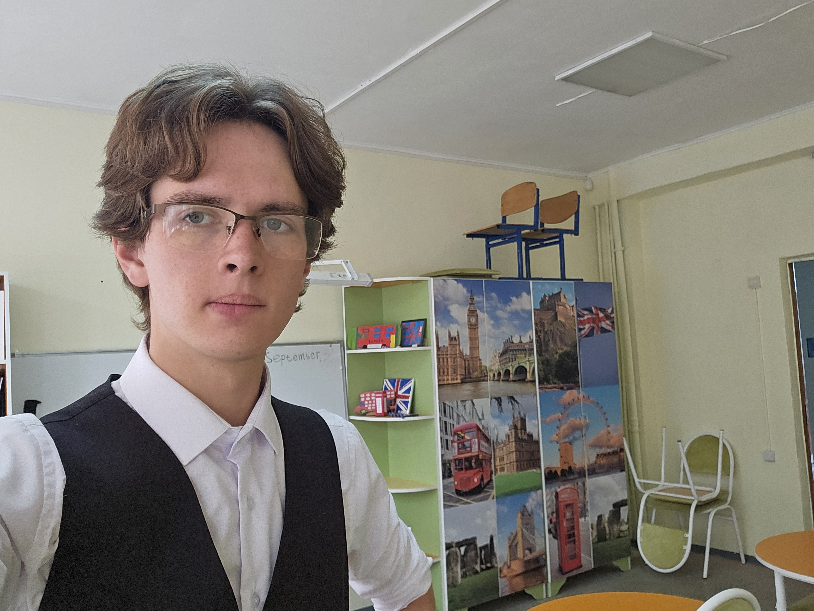
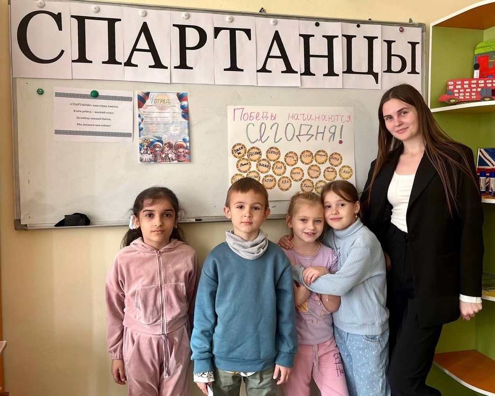

Забавно, что ты помнишь нашу первую встречу иначе, чем я. Я, если честно, тот момент со сферумом вообще не отложил в голове — наверное, я слишком пережевывал первые проведенные уроки. Но вот тот день, когда я тебя увидел — помню отлично.

Ты просто зашла ко мне в кабинет в один из дней на перемене и, не стесняясь, попросила то ли ножницы, то ли скотч. Как будто мы знакомы тысячу лет. Я тогда подумал: "Ого, она не стесняется и не испытывает неловкости, жесть она крутая наверное". Черная одежда на тебе в тот момент только усиливала эффект крутости.
Вплоть до лагеря мы особо не общались и сначала я осторожничал. Думал, вдруг это всё может завести куда-нибудь. А потом ты говоришь, что у тебя есть парень и я спокойно выдохнул, потому что я перестал думать о том, "а что если", и начал просто общаться. Расслабился. Мы шутили, разыгрывали коллег и детей, говоря всем, что мы брат и сестра (а Валентина Малентьевна даже купилась на это).

Так мы и общались с тобой долгое время, но периодически отмечала мою закрытость. Ты говорила мне об этом раз, второй, третий: "Ты постоянно слушаешь, но ничего не рассказываешь о себе". Я хотел идти навстречу и воспринимал это не как давление, а как любопытство с твоей стороны. И я начал по чуть-чуть открываться, постепенно. И с каждым разом я всё больше понимал, что тебе можно доверять, а доверие дорогого стоит.
Эта страница для того, чтобы ты всегда помнила, как мы встретились. И чтобы, если когда-нибудь забудешь, ты могла открыть этот сайт и вернуть те первые мгновения. И иногда мне кажется, что это было вчера, хотя с тех моментов прошло уже очень много времени. Какие из мгновений запечатались в памяти ярче всего? Об этом на следующей странице.
Спасибо, что начала общаться тогда,
Володя Английский